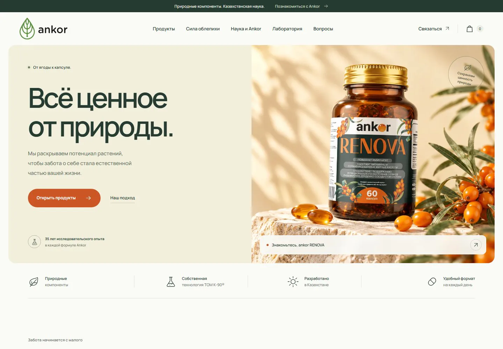
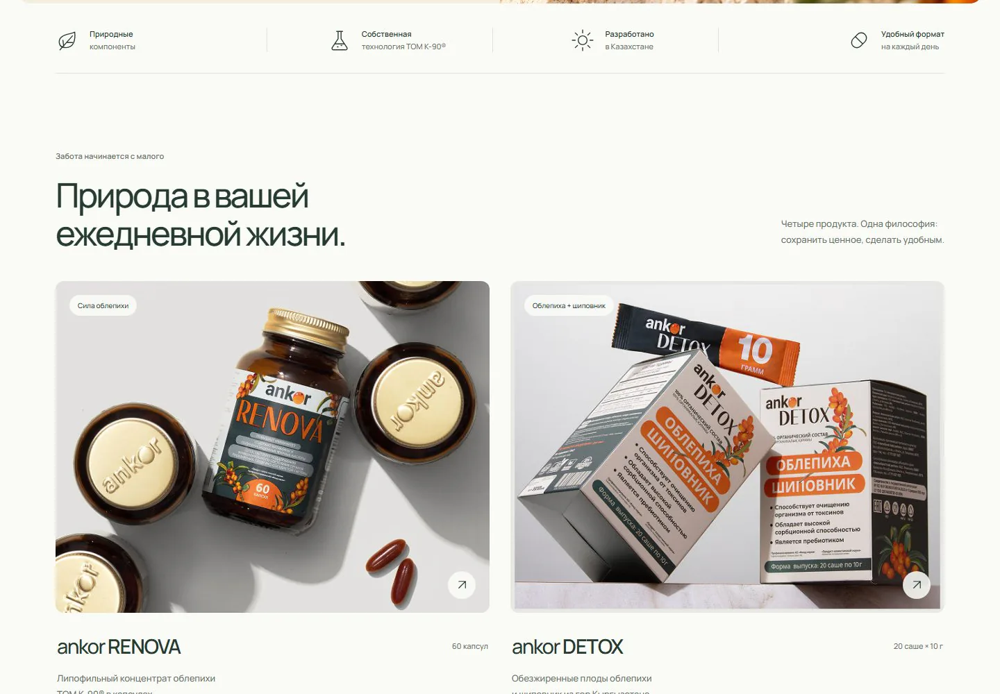

Сайт с каталогом
Ankor
Редизайн бренда: продукты, сравнение и удобная корзина.

Главный экран опубликованного редизайна Ankor
О проекте
Редизайн сайта Ankor с акцентом на природные материалы и спокойную типографику. Каталог объединяет RENOVA, DETOX, RENOVA+ и NIGELLA S., подробную информацию, сравнение и корзину. Заказ подготавливается для отправки в WhatsApp.
Что внутри
- Новая визуальная подача и адаптивная вёрстка
- Карточки и сравнение четырёх продуктов
- Корзина с сохранением выбранных товаров
- Подготовка заказа для WhatsApp
Экраны проекта

